Recorder Binary File Format
The recorder system saves all the info needed to replay the simulation in a binary file, using little endian byte order for the multibyte values.
In the next image representing the file format, we can get a quick view of all the detailed information. Each part that is visualized in the image will be explained in the following sections:
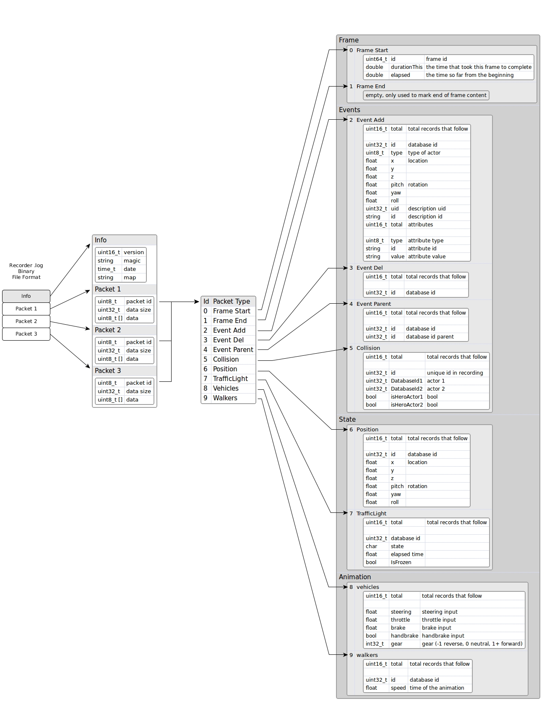
In summary, the file format has a small header with general info (version, magic string, date and the map used) and a collection of packets of different types (currently we use 10 types, but that will continue growing up in the future).
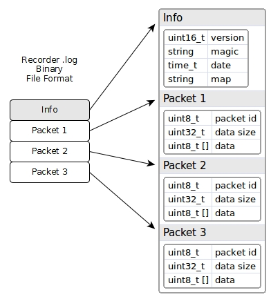
1- Strings in binary
Strings are encoded first with the length of it, followed by its characters without null character ending. For example, the string 'Town06' will be saved as hex values: 06 00 54 6f 77 6e 30 36
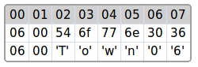
2- Info header
The info header has general information about the recorded file. Basically, it contains the version and a magic string to identify the file as a recorder file. If the header changes then the version will change also. Furthermore, it contains a date timestamp, with the number of seconds from the Epoch 1900, and also it contains a string with the name of the map that has been used for recording.
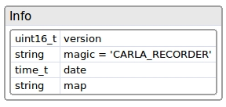
A sample info header is:
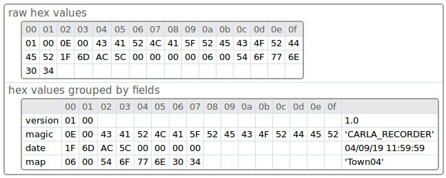
3- Packets
Each packet starts with a little header of two fields (5 bytes):
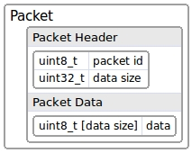
- id: The packet type
- size: Size of packet data
Header information is then followed by the data. The data is optional, a size of 0 means there is no data in the packet. If the size is greater than 0 it means that the packet has data bytes. Therefore, the data needs to be reinterpreted depending on the type of the packet.
The header of the packet is useful because we can just ignore those packets we are not interested in when doing playback. We only need to read the header (first 5 bytes) of the packet and jump to the next packet just skipping the data of the packet:
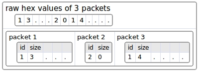
The types of packets are:
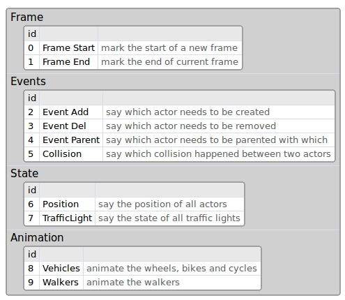
We suggest to use id over 100 for user custom packets, because this list will keep growing in the future.
Packet 0 - Frame Start
This packet marks the start of a new frame, and it will be the first one to start each frame. All packets need to be placed between a Frame Start and a Frame End.

So, elapsed + durationThis = elapsed time for next frame
Packet 1 - Frame End
This frame has no data and it only marks the end of the current frame. That helps the replayer to know the end of each frame just before the new one starts. Usually, the next frame should be a Frame Start packet to start a new frame.
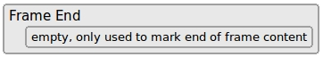
Packet 2 - Event Add
This packet says how many actors we need to create at current frame.

The field total says how many records follow. Each record starts with the id field, that is the id the actor has when it was recorded (on playback that id could change internally, but we need to use this id ). The type of actor can have these possible values:
- 0 = Other
- 1 = Vehicle
- 2 = Walker
- 3 = TrafficLight
- 4 = INVALID
After that, the location and the rotation where we want to create the actor is proceeded.
Right after we have the description of the actor. The description uid is the numeric id of the description and the id is the textual id, like 'vehicle.seat.leon'.
Then comes a collection of its attributes like color, number of wheels, role, etc. The number of attributes is variable and should look similar to this:
- number_of_wheels = 4
- sticky_control = true
- color = 79,33,85
- role_name = autopilot
Packet 3 - Event Del
This packet says how many actors need to be destroyed this frame.

It has the total of records, and each record has the id of the actor to remove.
For example, this packet could be like this:

The number 3 identifies the packet as (Event Del). The number 16 is the size of the data of the packet (4 fields of 4 bytes each). So if we don't want to process this packet, we could skip the next 16 bytes and will be directly to the start of the next packet. The next 3 says the total records that follows, and each record is the id of the actor to remove. So, we need to remove at this frame the actors 100, 101 and 120.
Packet 4 - Event Parent
This packet says which actor is the child of another (the parent).
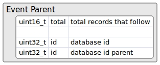
The first id is the child actor, and the second one will be the parent actor.
Packet 5 - Event Collision
If a collision happens between two actors, it will be registered in this packet. Currently only actors with a collision sensor will report collisions, so currently only hero vehicles have that sensor attached automatically.
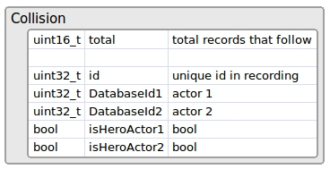
The id is just a sequence to identify each collision internally. Several collisions between the same pair of actors can happen in the same frame, because physics frame rate is fixed and usually there are several physics substeps in the same rendered frame.
Packet 6 - Position
This packet records the position and orientation of all actors of type vehicle and walker that exist in the scene.
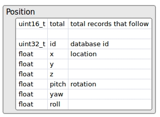
Packet 7 - TrafficLight
This packet records the state of all traffic lights in the scene. Which means that it stores the state (red, orange or green) and the time it is waiting to change to a new state.
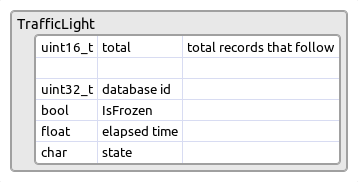
Packet 8 - Vehicle animation
This packet records the animation of the vehicles, bikes and cycles. This packet stores the throttle, sterring, brake, handbrake and gear inputs, and then set them at playback.
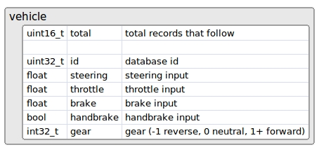
Packet 9 - Walker animation
This packet records the animation of the walker. It just saves the speed of the walker that is used in the animation.

4- Frame Layout
A frame consists of several packets, where all of them are optional, except the ones that have the start and end in that frame, that must be there always.

Event packets exist only in the frame where they happen.
Position and traffic light packets should exist in all frames, because they are required to move all actors and set the traffic lights to its state. They are optional but if they are not present then the replayer will not be able to move or set the state of traffic lights.
The animation packets are also optional, but by default they are recorded. That way the walkers are animated and also the vehicle wheels follow the direction of the vehicles.
5- File Layout
The layout of the file starts with the info header and then follows a collection of packets in groups. The first in each group is the Frame Start packet, and the last in the group is the Frame End packet. In between, we can find the rest of packets as well.
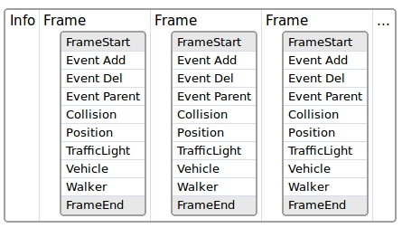
Usually, it is a good idea to have all packets regarding events first, and then the packets regarding position and state later.
The event packets are optional, since they appear when they happen, so we could have a layout like this one:

In frame 1 some actors are created and reparented, so we can observe its events in the image. In frame 2 there are no events. In frame 3 some actors have collided so the collision event appears with that info. In frame 4 the actors are destroyed.